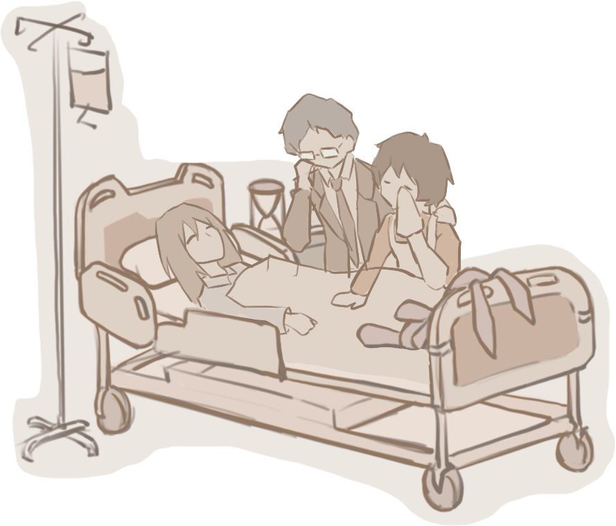

When I was dying, I felt myself slowly rise and eventually float to the ceiling of the hospital room,
overlooking my body and the busy bodies of the doctors.
SCROLL DOWN
The last thing I lost was my hearing. I could hear my father calling out for me and my mother sobbing.

At the same time, what came into my mind was my past life.